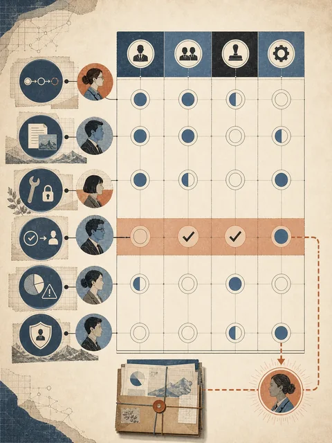

能力
模型可以生成转写与结构化笔记候选
把 lecture-notes Skill 交给一个教学团队
 VER. 2608.1
Built with impress.js
VER. 2608.1
Built with impress.js
本节结束时，你能把三个关键节点写成可交接的职责矩阵
“请自动转写录音、整理课堂笔记并发给学生”
模型可以生成转写与结构化笔记候选
存储工具、AI、助教和教师分别接手不同产物
谁确认授权、修正内容并批准学生访问
分工从任务和后果出发，不从“谁更聪明”出发
把行动类型拆开，职责才不会混在一个角色名里
提出候选、发现模式、生成可能路径
按明确规则读取、转换、保存或计算
比较证据、处理例外、决定是否可采用
允许对外、不可逆或高风险行动发生
执行能力和最终责任需要分别写出
职责矩阵要分别写执行权、判断权和责任归属
角色选择应由任务的确定性、开放性和后果决定
开放探索、候选生成、语言和多模态转换
确定性执行、字段检查、批量处理和重复计算
存档、传输、权限控制和可追溯记录
目标、边界、证据判断、批准和责任
风险和可验证性共同决定人应保留哪一层判断
| 节点：输入→产物 | 执行者／工具 | 判断／批准：通过或停止 | 证据／权限／交接 |
|---|---|---|---|
| 已授权录音→原始文件 | 存储工具保存；脚本登记 | 助教核对授权；未授权就停 | 授权记录、文件哈希；交转写者 |
| 原始文件→带时间转写 | 转写工具执行；AI 断句 | 助教抽听；损坏段退回或标记 | 时间位置、错误日志；交整理者 |
| 转写＋Slides→笔记草稿 | AI 提取结构；脚本查字段 | 教师核对术语、遗漏和说话人 | 原文位置、unknown；交课程负责人 |
| 草稿→内部课程笔记 | 工具存档版本；人修改 | 课程负责人批准访问范围 | 版本、权限、批准记录；交维护者 |
每组都写清角色、边界和交接
动作、产物、接手人
读取对象、依据、复查
能力、范围、停止条件
检查点、批准人、接管
时间、预算、隐私、版权、不可逆后果
责任人、维护者、接管对象

先从三个关键节点写出最小分工
先检查授权、现有产物和接管人；条件不全就暂停，并交出状态、证据和待决定事项
有检查点和备用路径才切到人工或备用工具；否则暂停并保留输入、状态和日志
历史记录不可读或权限失效时，不覆盖、不外发；保存本地产物和日志，再切换或暂停
只有授权仍有效的替代批准者才能继续，否则暂停；接管包带上状态、证据、待决定事项和期限
下一讲将把矩阵放进多人组织流程，加入权限、成本和采用条件
清楚的分工让流程不会依赖某个人脑中的秘密步骤
职责分工把能力、权限、判断和责任放在正确位置
探索、执行、判断与批准先分开
AI、脚本、普通工具和人各有适合范围
隐私、版权、来源、成本和不可逆后果进入矩阵
执行者、批准者、责任人和维护者都要可识别
职责清楚，自动化才不会把责任也自动隐藏